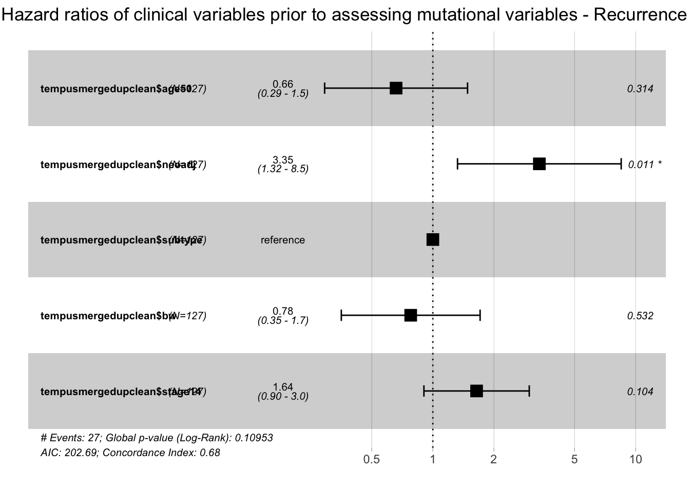
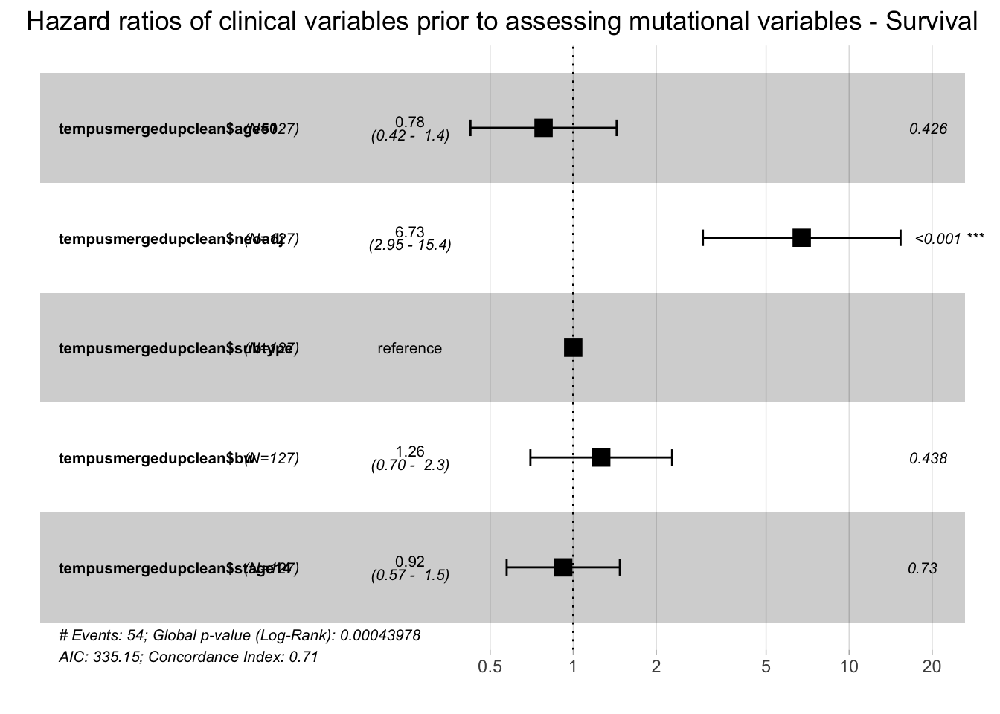

Tempus Data Analysis
Last updated: 2019-02-12
workflowr checks: (Click a bullet for more information)-
✔ R Markdown file: up-to-date
Great! Since the R Markdown file has been committed to the Git repository, you know the exact version of the code that produced these results.
-
✔ Environment: empty
Great job! The global environment was empty. Objects defined in the global environment can affect the analysis in your R Markdown file in unknown ways. For reproduciblity it’s best to always run the code in an empty environment.
-
✔ Seed:
set.seed(20190207)The command
set.seed(20190207)was run prior to running the code in the R Markdown file. Setting a seed ensures that any results that rely on randomness, e.g. subsampling or permutations, are reproducible. -
✔ Session information: recorded
Great job! Recording the operating system, R version, and package versions is critical for reproducibility.
-
Great! You are using Git for version control. Tracking code development and connecting the code version to the results is critical for reproducibility. The version displayed above was the version of the Git repository at the time these results were generated.✔ Repository version: 733bba4
Note that you need to be careful to ensure that all relevant files for the analysis have been committed to Git prior to generating the results (you can usewflow_publishorwflow_git_commit). workflowr only checks the R Markdown file, but you know if there are other scripts or data files that it depends on. Below is the status of the Git repository when the results were generated:
Note that any generated files, e.g. HTML, png, CSS, etc., are not included in this status report because it is ok for generated content to have uncommitted changes.Ignored files: Ignored: .DS_Store Ignored: .Rhistory Ignored: .Rproj.user/ Ignored: analysis/.DS_Store Ignored: code/ Ignored: data/ Ignored: docs/.DS_Store Ignored: docs/figure/.DS_Store Ignored: output/.DS_Store
Expand here to see past versions:
| File | Version | Author | Date | Message |
|---|---|---|---|---|
| Rmd | 733bba4 | Sheila Rajagopal | 2019-02-12 | repeat cleaned up analysis |
| Rmd | b3040b6 | Sheila Rajagopal | 2019-02-10 | analysis neo |
| Rmd | 3a23302 | Sheila Rajagopal | 2019-02-10 | analysis 3 |
| html | 3a23302 | Sheila Rajagopal | 2019-02-10 | analysis 3 |
| Rmd | 7fbf15a | Sheila Rajagopal | 2019-02-10 | analysis step 2 |
| html | 7fbf15a | Sheila Rajagopal | 2019-02-10 | analysis step 2 |
| Rmd | 99339fe | Sheila Rajagopal | 2019-02-10 | analysis step 1 |
| html | 99339fe | Sheila Rajagopal | 2019-02-10 | analysis step 1 |
| Rmd | 445bd8d | Sheila Rajagopal | 2019-02-08 | analysis 1 |
| html | 445bd8d | Sheila Rajagopal | 2019-02-08 | analysis 1 |
| html | 0333ca2 | Sheila Rajagopal | 2019-02-07 | website build 1 |
| html | 9620b54 | Sheila Rajagopal | 2019-02-07 | wflow_git_commit(all = TRUE) |
| Rmd | f7d6011 | Sheila Rajagopal | 2019-02-07 | start site |
| html | f7d6011 | Sheila Rajagopal | 2019-02-07 | start site |
Data structure and format
tempusmutationtemp$GeneInfo <- paste (tempusmutationtemp$variantcount, tempusmutationtemp$variant_name_C, tempusmutationtemp$variant_name_P, tempusmutationtemp$NM_number, tempusmutationtemp$typeofvariant, tempusmutationtemp$VAF, tempusmutationtemp$COSMICCases, sep='\t') # combines variant-specific variables into a temporary column for now
tempusmutationtemp <- tempusmutationtemp %>% group_by(StudyID, AccessionNo) %>%mutate(maxvariantcount = max(variantcount))
tempusmutationtemp <- dplyr::select(tempusmutationtemp, -c(biologicalmeaning, variant_name_C, variant_name_P, NM_number, typeofvariant, VAF, COSMICCases, variantcount, Notes)) #drops excess columns for merge purposes
tempusmutationtemp <- tempusmutationtemp %>% spread(Gene,GeneInfo) #Creates individual columns for each gene with the Gene Information as the value, every variant has its own row
tempusmutationtemp$V1=NULL #Clears artificial columns that were created in the process of formatting the dataset
tempusmutationtemp$X=NULL
tempusmutationtemp <- tempusmutationtemp %>% group_by(StudyID, AccessionNo, PanelName, Normalspecimen, Normalcollecteddate, Normalreceiveddate, Tumorspecimen, Tumorcollecteddate, Tumorreceiveddate, TumorPercentage, TumorMutationalBurden, PercentileTumorMutationalBurd, MicrosatelliteInstabilityStatu, DateSigned, genecount, maxvariantcount) %>% summarise_all(funs(toString(na.omit(.), sep='\t'))) #This flattens all of the rows -> RIGHT NOW each patient is on one line and multiple mutations for the same gene are in one entry as are their variant information for ease of merge
tempusmerge <- merge (tempusclinical, tempusmutationtemp, by="StudyID", all.x=TRUE, all.y=FALSE, sort=FALSE) #Merging the clinical and mutational data into one database, reports are excluded if they do not have clinical informationData cleaning/new variable generation
tempusmerge$age50 <- ifelse(tempusmerge$age_at_diagnosis < 50, 1, 0) #binary variable for age < 50 (which equals 1)
tempusmerge$neoadj <- ifelse (((as.Date(as.character(tempusmerge$date_surg1), format="%m/%d/%Y")-as.Date(as.character(tempusmerge$date_cx1), format="%m/%d/%Y"))>0) & (tempusmerge$Stage!="4"), 1, 0) #determining if pts had neoadjuvant chemotherapy
tempusmerge$HRstatus <- ifelse (tempusmerge$ER=="Pos" | tempusmerge$PR=="Pos", 1, 0) #Hormone-receptor positive status
tempusmerge$subtype <- ifelse (tempusmerge$HER2.x=="Neg" & tempusmerge$HRstatus==0, "TNBC", NA) #Characterizing the subtype variable
tempusmerge$subtype <- ifelse (tempusmerge$HER2.x=="Pos" & tempusmerge$HRstatus==0, "HER+/HR-", tempusmerge$subtype) #Characterizing the subtype variable
tempusmerge$subtype <- ifelse (tempusmerge$HER2.x=="Pos" & tempusmerge$HRstatus==1, "HER+/HR+", tempusmerge$subtype) #Characterizing the subtype variable
tempusmerge$subtype <- ifelse (tempusmerge$HER2.x=="Neg" & tempusmerge$HRstatus==1, "HER-/HR+", tempusmerge$subtype) #Characterizing the subtype variable
tempusmerge$bw <- ifelse (tempusmerge$race=="Black", "Black", NA) #Characterizing black/white alone
tempusmerge$bw <- ifelse (tempusmerge$race=="White", "White", tempusmerge$bw)
tempusmerge$vitalstatus <- ifelse (tempusmerge$vitalstatus=="0 Dead", "0", "1") #Factorizing vital status
tempusmerge$stage14 <- ifelse (tempusmerge$Stage %in% "1A",1,NA)
tempusmerge$stage14 <- ifelse (tempusmerge$Stage %in% "1B",1, tempusmerge$stage14)
tempusmerge$stage14 <- ifelse (tempusmerge$Stage %in% "1",1, tempusmerge$stage14)
tempusmerge$stage14 <- ifelse (tempusmerge$Stage %in% "2",2, tempusmerge$stage14)
tempusmerge$stage14 <- ifelse (tempusmerge$Stage %in% "2A",2, tempusmerge$stage14)
tempusmerge$stage14 <- ifelse (tempusmerge$Stage %in% "2B",2, tempusmerge$stage14)
tempusmerge$stage14 <- ifelse (tempusmerge$Stage %in% "3",3, tempusmerge$stage14)
tempusmerge$stage14 <- ifelse (tempusmerge$Stage %in% "3A",3, tempusmerge$stage14)
tempusmerge$stage14 <- ifelse (tempusmerge$Stage %in% "3B",3, tempusmerge$stage14)
tempusmerge$stage14 <- ifelse (tempusmerge$Stage %in% "3C",3, tempusmerge$stage14)
tempusmerge$stage14 <- ifelse (tempusmerge$Stage %in% "4",4, tempusmerge$stage14) #Numerical stage condensing
tempusmerge$nodeposneg <- ifelse (tempusmerge$RegionalNodePositive>0, 1, 0) #At least one positive lymph node
tempusmerge$recurrenceposneg <- ifelse (tempusmerge$type1strecurrence=="00 Patient became disease-free after treatment and has not had a recurrence.", 0, 1) #Positive/negative recurrence status alone without differentiation of site.
tempusmerge$recurrenceposneg <- ifelse (tempusmerge$type1strecurrence=="99 It is unknown whether the disease has recurred or if the patient was ever disease-free", NA, tempusmerge$recurrenceposneg) #Cleaning unknown recurrence variables from this
tempusmerge$recurrenceposneg <- ifelse (tempusmerge$type1strecurrence=="70 Since diagnosis, patient has never been disease-free. This includes cases with distant metastasis at diagnosis, systemic disease, unknown primary, or minimal disease that is not treated", NA, tempusmerge$recurrenceposneg) #Cleaning unknown recurrence variables from this
tempusmerge$TMB <- tempusmerge$TumorMutationalBurden
tempusmerge$TMB <- str_replace(tempusmerge$TMB, pattern = " m/MB", replacement = "")
tempusmerge$TMB <- as.numeric(tempusmerge$TMB) #Numeric interpretation of mutational burden
tempusmerge$timefu <- ifelse (tempusmerge$neoadj==1, ((as.Date(as.character(tempusmerge$date_FU), format="%m/%d/%Y"))-(as.Date(as.character(tempusmerge$date_cx1), format="%m/%d/%Y")))/360, ((as.Date(as.character(tempusmerge$date_FU), format="%m/%d/%Y"))-(as.Date(as.character(tempusmerge$date_surg1), format="%m/%d/%Y")))/360)
tempusmerge$timefu <- ifelse(is.na(tempusmerge$timefu), ((as.Date(as.character(tempusmerge$date_FU), format="%m/%d/%Y")-as.Date(as.character(tempusmerge$date_surg1), format="%m/%d/%Y")))/360, tempusmerge$timefu)
tempusmerge$timefu <- ifelse(tempusmerge$timefu<0, NA, tempusmerge$timefu) #duration of follow up for survival curves
tempusmergedupclean <- tempusmerge
tempusmergedupclean <- tempusmergedupclean[with(tempusmergedupclean, ave(TumorPercentage, StudyID, FUN=max)==TumorPercentage),] #keep duplicates by higher %
tempusmergedupclean <- tempusmergedupclean[with(tempusmergedupclean, ave(TMB, StudyID, FUN=max)==TMB),] #keep duplicates by higher TMB if same source, %Data summary
We have clinical information for 127 patients and mutation information for 131 patients.
We are missing clinical information for the following 4 patients. These are not included in the merged data set.
[1] "PN0118" "PN0124" "PN0153" "PN0155"duplicates <- tempusreports %>% filter(duplicated(StudyID) | duplicated(StudyID, fromLast = TRUE)) %>% select(StudyID, AccessionNo, Tumorspecimen, TumorPercentage)
duplicates8 patients have duplicate reports (most often primary tumor and lymph node) submitted with the above characteristics. These patients are included in the merged data set but in these cases, for any analysis, we counted each patient individually/once using the specimen that offered the best tumor percentage as relevant.
lymphnodes <- tempusreports %>% filter((Tumorspecimen=="Lymph node") & !(duplicated(StudyID) | duplicated(StudyID, fromLast = TRUE))) %>% select(StudyID, AccessionNo, Tumorspecimen, TumorPercentage)
lymphnodes3 patients have only lymph node submitted. These patients are included in the merged data set and treated as though they had primary tumor (as this was their only tumor specimen).
Clinical summary
Low-yield variables: Date and age of enrollment (38 patients), Sex (1 male patient), Insurance (1 patient with unknown insurance, 126 patients insured), Alcohol history (90 patients not reported), gravidity/parity (26 patients reported), menopause (26 patients reported), distant metastatic sites (only 2 sites reported), histology (14 patients with at least partial lobular disease), surgical margin (4 patients with ? residual disease), 2nd primary (only one patient reported), ki67: not known in 116/127 patients
Variables not incorporated for this analysis: Marital status at diagnosis, breast primary site, laterality, TNM edition and clinical staging, tumorsize, lymphovascularinvasion (64 patients only reported), radiation variables

Expand here to see past versions of Clinical summary-1.png:
| Version | Author | Date |
|---|---|---|
| 99339fe | Sheila Rajagopal | 2019-02-10 |
This is the age distribution of patients at time of diagnosis. This population skews young but does have representation throughout the age range.
| age<50 | Freq |
|---|---|
| 0 | 70 |
| 1 | 57 |
| Not-Hispanic | Yes-Hispanic | |
|---|---|---|
| Asian | 1 | 0 |
| Black | 60 | 0 |
| White | 63 | 3 |
| Reported smoking history | Freq |
|---|---|
| 1 | |
| 00 Never used | 62 |
| 01 Cigarette smoker | 18 |
| 05 Previous tobacco use, but not at present time | 26 |
| 99 Unknown | 20 |
| Vital status | Freq |
|---|---|
| 0 Dead | 46 |
| 1 Alive | 81 |
| Recurrence | Freq |
|---|---|
| 0 | 81 |
| 1 | 38 |
| 1+ positive nodes | Freq |
|---|---|
| 0 | 51 |
| 1 | 76 |
| Grade | Freq |
|---|---|
| 1 | 7 |
| 2 | 46 |
| 3 | 64 |
| 9 | 8 |
| Compiled stage | Freq |
|---|---|
| 1 | 16 |
| 1A | 15 |
| 1B | 1 |
| 2A | 37 |
| 2B | 28 |
| 3 | 1 |
| 3A | 18 |
| 3B | 4 |
| 3C | 5 |
| 4 | 2 |
| Unk | HER-neg | HER2-pos | |
|---|---|---|---|
| 0 | 1 | 31 | 12 |
| 1 | 4 | 53 | 26 |
| Subtype | Freq |
|---|---|
| HER-/HR+ | 53 |
| HER+/HR- | 12 |
| HER+/HR+ | 26 |
| TNBC | 31 |
| Chemotherapy | Freq |
|---|---|
| No | 38 |
| Yes | 89 |
| Neoadjuvant therapy | Freq |
|---|---|
| 0 | 63 |
| 1 | 26 |
| Radiotherapy | Freq |
|---|---|
| No | 49 |
| Yes | 78 |
| Initial surgery type | Freq |
|---|---|
| 2 | |
| BCS | 48 |
| bilateral mam | 8 |
| mastectomy | 68 |
| other/uk/nos | 1 |
| Hormone therapy | Freq |
|---|---|
| No | 56 |
| Yes | 71 |
| Of note, with muta | tion testing prior to sequencing, we had 1 patient each report a BRCA 1 and BRCA 2 mutation. |
Mutations summary
Variables not incorporated for this analysis: Percentile mutational burden (incomplete)
We have representation of 560 genes with mutations in this data set (including both primary tumors and lymph nodes). The most common mutations (incorporating BOTH pathogenic + VUS) were as follows:
TP53 MCL1 PIK3CA ERBB2/HER2 ZFHX3 ATM
72 44 39 33 27 23
BCORL1 FAT1 KMT2B KMT2D
23 23 23 23 
Expand here to see past versions of Mutation summary and tumor purity-1.png:
| Version | Author | Date |
|---|---|---|
| 99339fe | Sheila Rajagopal | 2019-02-10 |
This is the tumor purity distribution of patients at time of diagnosis. 30% purity is conisdered sufficient to perform MSI testing, for example. 104 of our 127 samples met this criteria.
Min. 1st Qu. Median Mean 3rd Qu. Max.
0.000 1.300 2.900 7.562 6.050 76.300 
Expand here to see past versions of Ongoing mutational summary-1.png:
| Version | Author | Date |
|---|---|---|
| 7fbf15a | Sheila Rajagopal | 2019-02-10 |
| 99339fe | Sheila Rajagopal | 2019-02-10 |
Only 88 of 139 reports contained percentile information.
| MSI status | Freq |
|---|---|
| Equivocal | 6 |
| High | 2 |
| MSI can not be assessed because the tumor content is below 30%. | 6 |
| Stable | 64 |
| Stable (MSS) | 43 |
| Undetermined | 6 |
| Variant type | Freq |
|---|---|
| Missense variant | 1807 |
| Stop gain | 412 |
| Splice region variant | 407 |
| Copy number gain | 319 |
| Copy number loss | 319 |
| Frameshift | 255 |
| Frameshift- LOF | 64 |
| Stop gain- LOF | 57 |
| Inframe deletion | 51 |
| Splice region | 36 |
| Missense variant- LOF | 29 |
| Missense variant - LOF | 26 |
| Frameshift - LOF | 22 |
| copy number loss | 19 |
| Stop gain - LOF | 19 |
| Splice region variant- LOF | 18 |
| copy number gain | 17 |
| Missense variant (exon 10) - GOF | 17 |
| missense variant | 14 |
| Missense variant (exon 21) - GOF | 13 |
| Copy Number gain | 11 |
| Missense variant- GOF | 10 |
| region variant | 8 |
| Start loss | 8 |
| frameshift | 4 |
| Frameshift VAF: | 4 |
| Inframe insertion | 4 |
| Missense variant -LOF | 4 |
| Missense variant (exon 5) - GOF | 4 |
| Splice region vairant | 4 |
| Splice region variant- GOF | 4 |
| 3 | |
| Splice region variant - LOF | 3 |
| stop gain | 3 |
| Stop gain- | 3 |
| Variant | 3 |
| Copy Number Loss | 2 |
| Frameshift LOF | 2 |
| Missense Variant | 2 |
| Missense variant - GOF | 2 |
| Missense variant (exon 10)- GOF | 2 |
| Missense variant (exon 14) - GOF | 2 |
| Missense variant â LOF | 2 |
| Missense variant LOF | 2 |
| Missense variant-LOF | 2 |
| Missense variant(exon 2) - GOF | 2 |
| splice region variant | 2 |
| Splice region variant â LOF | 2 |
| Splice region variant VAF | 2 |
| Stop Gain | 2 |
| Stop gain LOF | 2 |
| Copy numberloss | 1 |
| copy numbre gain | 1 |
| Frameshift- LOF VAF | 1 |
| frameshift-LOF | 1 |
| FrameshiftVAF: | 1 |
| Inframe deletion - GOF | 1 |
| inframe insertion | 1 |
| Inframe insertion - GOF | 1 |
| Missense variant | 1 |
| Missense varian(exon 10) - GOF | 1 |
| Missense variant - | 1 |
| Missense variant (exon 21) - GOF VAF | 1 |
| Missense variant (exon 8) - GOF | 1 |
| Missense Variant (exon 8)- GOF | 1 |
| Missense variant GOF | 1 |
| Missense variant(exon 10) - GOF | 1 |
| Missense variant(exon 4) - GOF | 1 |
| Missesne variant | 1 |
| rameshift | 1 |
| region variant- LOF | 1 |
| Splice | 1 |
| Splice region vairant - LOF | 1 |
| Splice region variant -LOF | 1 |
| Splice region variant â GOF | 1 |
| Splice region variant-(exon 3) â GOF | 1 |
| Start Loss | 1 |
| StartStop gain loss- LOF | 1 |
| Stop gain VAF | 1 |
| Stop gain- GOF | 1 |
| Stop gain-LOF | 1 |
| Stop gain(exon 4) - LOF | 1 |
| Stop loss | 1 |
| Stopgain | 1 |
| Missense variants, splice region variants | , stop gains and copy number gains/losses were the best represented in our cohort. |
Recurrence and survival among different clinical subgroups
surv_object <- Surv(time = tempusmergedupclean$timefu, event = tempusmergedupclean$recurrenceposneg)
fit.coxph <- coxph(surv_object ~ tempusmergedupclean$age50 + tempusmergedupclean$neoadj + tempusmergedupclean$subtype + tempusmergedupclean$bw + tempusmergedupclean$stage14,
data = tempusmergedupclean)
ggforest(fit.coxph, data = tempusmergedupclean, main="Hazard ratios of clinical variables prior to assessing mutational variables - Recurrence ")Warning: Removed 1 rows containing missing values (geom_errorbar).
Expand here to see past versions of unnamed-chunk-1-1.png:
| Version | Author | Date |
|---|---|---|
| 99339fe | Sheila Rajagopal | 2019-02-10 |
surv_object <- Surv(time = tempusmergedupclean$timefu, event = as.numeric(tempusmergedupclean$vitalstatus))
fit.coxph <- coxph(surv_object ~ tempusmergedupclean$age50 + tempusmergedupclean$neoadj + tempusmergedupclean$subtype + tempusmergedupclean$bw + tempusmergedupclean$stage14,
data = tempusmergedupclean)
ggforest(fit.coxph, data = tempusmergedupclean, main="Hazard ratios of clinical variables prior to assessing mutational variables - Survival")Warning: Removed 1 rows containing missing values (geom_errorbar).
Mutations among different subgroups - Subtype and race (Not significant)
subtypeHERposHRneg <- tempusmergedupclean %>% filter(subtype=="HER+/HR-")
allgenesHERposHRneg <- colSums(!((subtypeHERposHRneg[,105:663])==""))
allgenesHERposHRneg["ERBB2/HER2"] <- sum(allgenesHERposHRneg["ERBB2"], allgenesHERposHRneg["ERBB2 (HER2)"], allgenesHERposHRneg["ERBB2(HER2)"], allgenesHERposHRneg["ERBB2HER2)"])
headHERposHRneg <- head(sort(allgenesHERposHRneg, decreasing=TRUE), 10)
headHERposHRneg TP53 ERBB2/HER2 CDK12 ERBB2 PIK3CA
9 9 6 6 4
ERBB2 (HER2) FLG KDM6A MCL1 BCOR
3 3 3 3 2 subtypeHERnegHRpos <- tempusmergedupclean %>% filter(subtype=="HER-/HR+")
allgenesHERnegHRpos <- colSums(!((subtypeHERnegHRpos[,105:663])==""))
allgenesHERnegHRpos["ERBB2/HER2"] <- sum(allgenesHERnegHRpos["ERBB2"], allgenesHERnegHRpos["ERBB2 (HER2)"], allgenesHERnegHRpos["ERBB2(HER2)"], allgenesHERnegHRpos["ERBB2HER2)"])
headHERnegHRpos <- head(sort(allgenesHERnegHRpos, decreasing=TRUE), 10)
headHERnegHRpos MCL1 PIK3CA TP53 ZFHX3 BCORL1 KMT2B FAT1 KMT2D ALK AMER1
22 21 19 15 14 13 12 12 11 11 subtypeTNBC <- tempusmergedupclean %>% filter(subtype=="TNBC")
allgenesTNBC <- colSums(!((subtypeTNBC[,105:663])==""))
allgenesTNBC["ERBB2/HER2"] <- sum(allgenesTNBC["ERBB2"], allgenesTNBC["ERBB2 (HER2)"], allgenesTNBC["ERBB2(HER2)"], allgenesTNBC["ERBB2HER2)"])
headTNBC<- head(sort(allgenesTNBC, decreasing=TRUE), 10)
headTNBC TP53 MCL1 NOTCH1 FLG KMT2C MYC AMER1 CDK4 CDKN1B DNMT3A
25 8 7 5 5 5 4 4 4 4 subtypeHERposHRpos <- tempusmergedupclean %>% filter(subtype=="HER+/HR+")
allgenesHERposHRpos <- colSums(!((subtypeHERposHRpos[,105:663])==""))
allgenesHERposHRpos["ERBB2/HER2"] <- sum(allgenesHERposHRpos["ERBB2"], allgenesHERposHRpos["ERBB2 (HER2)"], allgenesHERposHRpos["ERBB2(HER2)"], allgenesHERposHRpos["ERBB2HER2)"])
headHERposHRpos <- head(sort(allgenesHERposHRpos, decreasing=TRUE), 10)
headHERposHRpos TP53 ERBB2/HER2 PIK3CA ERBB2 (HER2) ATM
17 12 10 9 8
MCL1 CDK12 RARA AMER1 HNF1B
8 7 7 6 6 chisq.test(headHERnegHRpos, headHERposHRneg, headTNBC, headHERposHRpos)
Pearson's Chi-squared test
data: headHERnegHRpos and headHERposHRneg
X-squared = 33.75, df = 28, p-value = 0.2092subtypewhite <- tempusmergedupclean %>% filter(race=="White")
allgeneswhite<- colSums(!((subtypewhite[,105:663])==""))
allgeneswhite["ERBB2/HER2"] <- sum(allgeneswhite["ERBB2"], allgeneswhite["ERBB2 (HER2)"], allgeneswhite["ERBB2(HER2)"], allgeneswhite["ERBB2HER2)"])
headwhite <- head(sort(allgeneswhite, decreasing=TRUE), 5)
headwhite TP53 MCL1 PIK3CA ERBB2/HER2 BCORL1
32 25 20 14 13 subtypeblack <- tempusmergedupclean %>% filter(race=="Black")
allgenesblack<- colSums(!((subtypeblack[,105:663])==""))
allgenesblack["ERBB2/HER2"] <- sum(allgenesblack["ERBB2"], allgenesblack["ERBB2 (HER2)"], allgenesblack["ERBB2(HER2)"], allgenesblack["ERBB2HER2)"])
headblack <- head(sort(allgenesblack, decreasing=TRUE), 5)
headblack TP53 PIK3CA ERBB2/HER2 MCL1 ZFHX3
40 19 19 18 15 chisq.test(headwhite, headblack)
Pearson's Chi-squared test
data: headwhite and headblack
X-squared = 15, df = 12, p-value = 0.2414We did not see a significant difference in our cohort between breast cancer subtype or race between the top 5 most mutated genes.
Mutations among different subgroups - Patients younger than 50
subtypeyoung <- tempusmergedupclean %>% filter(age50==1)
allgenesyoung<- colSums(!((subtypeyoung[,105:663])==""))
allgenesyoung["ERBB2/HER2"] <- sum(allgenesyoung["ERBB2"], allgenesyoung["ERBB2 (HER2)"], allgenesyoung["ERBB2(HER2)"], allgenesyoung["ERBB2HER2)"])
headyoung <- head(sort(allgenesyoung, decreasing=TRUE), 5)
headyoung TP53 MCL1 KMT2D FLG NOTCH1
32 20 13 12 12 subtypeold <- tempusmergedupclean %>% filter(age50==0)
allgenesold<- colSums(!((subtypeold[,105:663])==""))
allgenesold["ERBB2/HER2"] <- sum(allgenesold["ERBB2"], allgenesold["ERBB2 (HER2)"], allgenesold["ERBB2(HER2)"], allgenesold["ERBB2HER2)"])
headold <- head(sort(allgenesold, decreasing=TRUE), 5)
headold TP53 PIK3CA MCL1 ERBB2/HER2 FAT1
40 28 24 23 17 chisq.test(headold, headyoung)
Pearson's Chi-squared test
data: headold and headyoung
X-squared = 15, df = 12, p-value = 0.2414We did not see a a statistically significant difference in the distribution of genes in the younger patients relative to the older patients (for the top 5 genes).
tempusneo <- tempusmergedupclean %>% filter(tempusmergedupclean$neoadj==1 & !(StudyID=="MB-0138") & !(StudyID=="MB-1020") & !(StudyID=="MB-1049"))
kable(table(tempusneo$recurrenceposneg), caption = "Neoadjuvant patients who experienced recurrence", col.names=c("Recurrence", "Freq"))| Recurrence | Freq |
|---|---|
| 0 | 15 |
| 1 | 8 |
kable(table(tempusneo$vitalstatus), caption = "Neoadjuvant patients who experienced recurrence", col.names=c("Recurrence", "Freq"))| Recurrence | Freq |
|---|---|
| 0 | 8 |
| 1 | 15 |
neoadjTP53<- tempusneo[,"TP53"]
neoadjTP53 <- ifelse (!(neoadjTP53==""), 1, 0)
surv_object <- Surv(time = tempusneo$timefu, event = tempusneo$recurrenceposneg)
fit2<- survfit(Surv(tempusneo$TMB) ~ recurrenceposneg, data = tempusneo)
ggsurvplot(fit2, pval=TRUE)
fit.coxph <- coxph(surv_object ~ tempusneo$TMB,
data = tempusneo)
ggforest(fit.coxph, data = tempusneo, main="Hazard ratios of TMB in neoadjuvant patients - Recurrence")
surv_object <- Surv(time = tempusneo$timefu, event = as.numeric(tempusneo$vitalstatus))
fit2<- survfit(Surv(tempusneo$TMB) ~ vitalstatus, data = tempusneo)
ggsurvplot(fit2, pval=TRUE)
fit.coxph <- coxph(surv_object ~ tempusneo$TMB,
data = tempusneo)
ggforest(fit.coxph, data = tempusneo, main="Hazard ratios of TMB in neoadjuvant patients - Recurrence") TMB was nonsignifiantly associated with recurrence when increased in neoadjuvant patients, but our sample size was very small. This relationship was inverted but also nonsignificant for survival.
TMB was nonsignifiantly associated with recurrence when increased in neoadjuvant patients, but our sample size was very small. This relationship was inverted but also nonsignificant for survival.
Heterogeneity between sentinel lymph nodes and primary tumors
tempusbreastlymph <- tempusmerge %>% filter((StudyID %in% duplicates$StudyID) & !(Tumorspecimen=="") & !(StudyID=="PN0263"))
subtypelymph <- tempusbreastlymph %>% filter(Tumorspecimen=="Lymph node")
subtypebreast <- tempusbreastlymph %>% filter(Tumorspecimen=="Breast")
allgenesbreast<- colSums(!((subtypebreast[,105:663])==""))
allgenesbreast["ERBB2/HER2"] <- sum(allgenesbreast["ERBB2"], allgenesbreast["ERBB2 (HER2)"], allgenesbreast["ERBB2(HER2)"], allgenesbreast["ERBB2HER2)"])
print(head(sort(allgenesbreast, decreasing=TRUE))) TP53 FAT1 MCL1 ZFHX3 ELF3 GATA1
5 4 4 4 3 3 allgeneslymph<- colSums(!((subtypelymph[,105:663])==""))
allgeneslymph["ERBB2/HER2"] <- sum(allgeneslymph["ERBB2"], allgeneslymph["ERBB2 (HER2)"], allgeneslymph["ERBB2(HER2)"], allgeneslymph["ERBB2HER2)"])
print(head(sort(allgeneslymph, decreasing=TRUE)))PIK3CA TP53 ARID1A ARID5B ASXL1 ATM
4 2 1 1 1 1 We did see heterogeneity between the mutations represented in the lymph nodes and the mutations represented in the primary breast tumors for those samples. Two of the lymph nodes had 20% purity, 2 had 40% purity and 2 had 50% purity.
Exploring what mutation distribution means from a clinical standpoint
We have the variables of genecount (number of uniquely mutated genes for an individual patient) maxvariantcount (maximum frequency of variants for an individual gene for an individual patient) *TMB (Overall tumor mutational burden as measured by Tempus)
summary(tempusmergedupclean$genecount) Min. 1st Qu. Median Mean 3rd Qu. Max.
1.00 7.00 12.00 24.72 24.00 184.00 table(tempusmergedupclean$genecount)
1 2 3 4 5 6 7 8 9 10 11 12 13 14 15 16 17 18
3 6 5 5 7 5 4 11 9 6 2 7 5 2 1 2 7 2
19 20 21 23 24 26 27 29 31 33 35 42 43 45 48 49 51 52
1 1 1 2 2 2 1 1 1 2 1 1 1 2 2 1 1 2
59 61 87 95 96 97 99 109 123 145 160 182 184
1 1 1 1 1 1 1 1 1 1 1 1 1 hist(tempusmergedupclean$genecount, main="Distribution of uniquely mutated genes per patient sample")
Expand here to see past versions of Mutation distribution per patient-1-1.png:
| Version | Author | Date |
|---|---|---|
| 99339fe | Sheila Rajagopal | 2019-02-10 |
summary(tempusmergedupclean$maxvariantcount) Min. 1st Qu. Median Mean 3rd Qu. Max.
1.000 1.000 1.000 1.866 2.000 9.000 table(tempusmergedupclean$maxvariantcount)
1 2 3 4 5 6 7 8 9
78 25 8 8 2 2 2 1 1 hist(tempusmergedupclean$maxvariantcount, main="Distribution of highest number of variants\n for a single gene per patient sample")
Expand here to see past versions of Mutation distribution per patient-1-2.png:
| Version | Author | Date |
|---|---|---|
| 99339fe | Sheila Rajagopal | 2019-02-10 |
summary(tempusmergedupclean$TMB) Min. 1st Qu. Median Mean 3rd Qu. Max.
0.000 1.300 2.900 7.562 6.050 76.300 table(tempusmergedupclean$TMB)
0 0.4 0.8 1.3 1.7 2.1 2.5 2.9 3.3 3.8 4.2 4.6 5 5.4 6.7
4 13 8 16 6 12 4 5 11 2 3 2 3 6 1
7.5 7.9 8.8 11.3 11.7 12.1 12.5 13.8 14.2 14.6 16.3 20.4 23.3 26.7 28.8
3 2 1 2 1 1 2 1 2 1 1 2 1 1 1
30.4 35 35.4 42.5 57.5 58.3 71.3 76.3
2 1 1 1 1 1 1 1 hist(tempusmergedupclean$TMB, main="Distribution of tumor mutational burden (as measured by Tempus)")
Expand here to see past versions of Mutation distribution per patient-1-3.png:
| Version | Author | Date |
|---|---|---|
| 7fbf15a | Sheila Rajagopal | 2019-02-10 |
| 99339fe | Sheila Rajagopal | 2019-02-10 |
cor(tempusmergedupclean$genecount, tempusmergedupclean$maxvariantcount)[1] 0.8499669cor(tempusmergedupclean$genecount, tempusmergedupclean$TMB)[1] 0.9626302cor(tempusmergedupclean$maxvariantcount, tempusmergedupclean$TMB)[1] 0.8174039We see a long tail towards the right in terms of frequency of uniquely mutated genes, number of variants for a single gene and TMB, suggesting (as could be expected), that there are a few samples that have a significant burden of mutations in some form. There is good correlaton between gene count, max variant count and TMB.
ggplot()+
geom_line(data=tempusmergedupclean, aes(x=tempusmergedupclean$TMB, y=tempusmergedupclean$maxvariantcount), size=1, color="red")+
geom_line(data=tempusmergedupclean, aes(x=tempusmergedupclean$TMB, y=tempusmergedupclean$genecount), size=1, color="blue")
Expand here to see past versions of Mutation distribution per patient-2-1.png:
| Version | Author | Date |
|---|---|---|
| 7fbf15a | Sheila Rajagopal | 2019-02-10 |
| 99339fe | Sheila Rajagopal | 2019-02-10 |
Blue relfects gene count, red reflects max variant count. These track in a relatively linear fashion with TMB.
surv_object <- Surv(time = tempusmergedupclean$timefu, event = tempusmergedupclean$recurrenceposneg)
fit.coxph <- coxph(surv_object ~ tempusmergedupclean$genecount + tempusmergedupclean$TMB + tempusmergedupclean$maxvariantcount,
data = tempusmergedupclean)
ggforest(fit.coxph, data = tempusmergedupclean, main="Comparative hazard ratios of recurrence associated \n with markers of mutational heterogeneity")
Expand here to see past versions of Mutation distribution per patient-3-1.png:
| Version | Author | Date |
|---|---|---|
| 7fbf15a | Sheila Rajagopal | 2019-02-10 |
fit1<- survfit(Surv(tempusmergedupclean$genecount) ~ recurrenceposneg, data = tempusmergedupclean)
ggsurvplot(fit1, pval=TRUE)
Expand here to see past versions of Mutation distribution per patient-3-2.png:
| Version | Author | Date |
|---|---|---|
| 7fbf15a | Sheila Rajagopal | 2019-02-10 |
fit2<- survfit(Surv(log(tempusmergedupclean$maxvariantcount)) ~ recurrenceposneg, data = tempusmergedupclean)
ggsurvplot(fit2, pval=TRUE)
Expand here to see past versions of Mutation distribution per patient-3-3.png:
| Version | Author | Date |
|---|---|---|
| 7fbf15a | Sheila Rajagopal | 2019-02-10 |
fit3<- survfit(Surv(tempusmergedupclean$TMB) ~ recurrenceposneg, data = tempusmergedupclean)
ggsurvplot(fit3, pval=TRUE)
Expand here to see past versions of Mutation distribution per patient-3-4.png:
| Version | Author | Date |
|---|---|---|
| 7fbf15a | Sheila Rajagopal | 2019-02-10 |
surv_object <- Surv(time = tempusmergedupclean$timefu, event = as.numeric(tempusmergedupclean$vitalstatus))
fit.coxph <- coxph(surv_object ~ tempusmergedupclean$genecount + tempusmergedupclean$TMB + tempusmergedupclean$maxvariantcount,
data = tempusmergedupclean)
ggforest(fit.coxph, data = tempusmergedupclean, main="Comparative hazard ratios of recurrence associated \n with markers of mutational heterogeneity")
Expand here to see past versions of Mutation distribution per patient-3-5.png:
| Version | Author | Date |
|---|---|---|
| 7fbf15a | Sheila Rajagopal | 2019-02-10 |
fit1<- survfit(Surv(tempusmergedupclean$genecount) ~ vitalstatus, data = tempusmergedupclean)
ggsurvplot(fit1, pval=TRUE)
Expand here to see past versions of Mutation distribution per patient-3-6.png:
| Version | Author | Date |
|---|---|---|
| 7fbf15a | Sheila Rajagopal | 2019-02-10 |
fit2<- survfit(Surv(log(tempusmergedupclean$maxvariantcount)) ~ vitalstatus, data = tempusmergedupclean)
ggsurvplot(fit2, pval=TRUE)
Expand here to see past versions of Mutation distribution per patient-3-7.png:
| Version | Author | Date |
|---|---|---|
| 7fbf15a | Sheila Rajagopal | 2019-02-10 |
fit3<- survfit(Surv(tempusmergedupclean$TMB) ~ vitalstatus, data = tempusmergedupclean)
ggsurvplot(fit3, pval=TRUE)
mylogit <- glm(tempusmergedupclean$recurrenceposneg ~ tempusmergedupclean$genecount + +tempusmergedupclean$subtype + tempusmergedupclean$age50 + tempusmergedupclean$race +tempusmergedupclean$stage14, data = tempusmergedupclean, family = "binomial")
summary(mylogit)
Call:
glm(formula = tempusmergedupclean$recurrenceposneg ~ tempusmergedupclean$genecount +
+tempusmergedupclean$subtype + tempusmergedupclean$age50 +
tempusmergedupclean$race + tempusmergedupclean$stage14, family = "binomial",
data = tempusmergedupclean)
Deviance Residuals:
Min 1Q Median 3Q Max
-1.3937 -0.8758 -0.6649 1.1017 2.0726
Coefficients:
Estimate Std. Error z value Pr(>|z|)
(Intercept) -15.06964 1455.39797 -0.010 0.992
tempusmergedupclean$genecount -0.01568 0.01054 -1.487 0.137
tempusmergedupclean$subtypeHER+/HR- -0.96830 0.87338 -1.109 0.268
tempusmergedupclean$subtypeHER+/HR+ -0.89922 0.60476 -1.487 0.137
tempusmergedupclean$subtypeTNBC 0.02569 0.49860 0.052 0.959
tempusmergedupclean$age50 0.26406 0.43592 0.606 0.545
tempusmergedupclean$raceBlack 13.99316 1455.39771 0.010 0.992
tempusmergedupclean$raceWhite 13.61720 1455.39772 0.009 0.993
tempusmergedupclean$stage14 0.46914 0.30355 1.545 0.122
(Dispersion parameter for binomial family taken to be 1)
Null deviance: 145.93 on 114 degrees of freedom
Residual deviance: 132.25 on 106 degrees of freedom
(12 observations deleted due to missingness)
AIC: 150.25
Number of Fisher Scoring iterations: 14mylogit <- glm(tempusmergedupclean$recurrenceposneg ~ tempusmergedupclean$TMB + +tempusmergedupclean$subtype + tempusmergedupclean$age50 + tempusmergedupclean$race +tempusmergedupclean$stage14, data = tempusmergedupclean, family = "binomial")
summary(mylogit)
Call:
glm(formula = tempusmergedupclean$recurrenceposneg ~ tempusmergedupclean$TMB +
+tempusmergedupclean$subtype + tempusmergedupclean$age50 +
tempusmergedupclean$race + tempusmergedupclean$stage14, family = "binomial",
data = tempusmergedupclean)
Deviance Residuals:
Min 1Q Median 3Q Max
-1.3747 -0.8964 -0.6463 1.1281 2.1818
Coefficients:
Estimate Std. Error z value Pr(>|z|)
(Intercept) -15.49381 1455.39789 -0.011 0.992
tempusmergedupclean$TMB -0.03359 0.02620 -1.282 0.200
tempusmergedupclean$subtypeHER+/HR- -0.96809 0.86911 -1.114 0.265
tempusmergedupclean$subtypeHER+/HR+ -0.88973 0.60364 -1.474 0.140
tempusmergedupclean$subtypeTNBC 0.07328 0.49484 0.148 0.882
tempusmergedupclean$age50 0.26805 0.43440 0.617 0.537
tempusmergedupclean$raceBlack 14.24868 1455.39768 0.010 0.992
tempusmergedupclean$raceWhite 13.91134 1455.39769 0.010 0.992
tempusmergedupclean$stage14 0.48465 0.30347 1.597 0.110
(Dispersion parameter for binomial family taken to be 1)
Null deviance: 145.93 on 114 degrees of freedom
Residual deviance: 133.12 on 106 degrees of freedom
(12 observations deleted due to missingness)
AIC: 151.12
Number of Fisher Scoring iterations: 14mylogit <- glm(tempusmergedupclean$recurrenceposneg ~ tempusmergedupclean$maxvariantcount + +tempusmergedupclean$subtype + tempusmergedupclean$age50 + tempusmergedupclean$race +tempusmergedupclean$stage14, data = tempusmergedupclean, family = "binomial")
summary(mylogit)
Call:
glm(formula = tempusmergedupclean$recurrenceposneg ~ tempusmergedupclean$maxvariantcount +
+tempusmergedupclean$subtype + tempusmergedupclean$age50 +
tempusmergedupclean$race + tempusmergedupclean$stage14, family = "binomial",
data = tempusmergedupclean)
Deviance Residuals:
Min 1Q Median 3Q Max
-1.4050 -0.9009 -0.6605 1.1825 2.0525
Coefficients:
Estimate Std. Error z value Pr(>|z|)
(Intercept) -15.44029 1455.39791 -0.011 0.992
tempusmergedupclean$maxvariantcount -0.25706 0.20141 -1.276 0.202
tempusmergedupclean$subtypeHER+/HR- -0.92166 0.86749 -1.062 0.288
tempusmergedupclean$subtypeHER+/HR+ -0.82229 0.60229 -1.365 0.172
tempusmergedupclean$subtypeTNBC 0.07856 0.49497 0.159 0.874
tempusmergedupclean$age50 0.22407 0.43263 0.518 0.605
tempusmergedupclean$raceBlack 14.43553 1455.39767 0.010 0.992
tempusmergedupclean$raceWhite 14.04969 1455.39767 0.010 0.992
tempusmergedupclean$stage14 0.49328 0.30423 1.621 0.105
(Dispersion parameter for binomial family taken to be 1)
Null deviance: 145.93 on 114 degrees of freedom
Residual deviance: 133.53 on 106 degrees of freedom
(12 observations deleted due to missingness)
AIC: 151.53
Number of Fisher Scoring iterations: 14We saw significant associations between recurrence and gene count, variant count and TMB in univariate analyses. With a logistic regression stratifying for age, race, subtype and stage, these did not maintain significance, but this may be due to the smaller sample size as genecount and TMB did not correlate closely with stage and would not expected to be completely substituted for by this variable in this data set.
Extremely mutated patients x 2 - case examples
tempusmergedupclean$StudyID[tempusmergedupclean$genecount==max(tempusmergedupclean$genecount)][1] PN0268
127 Levels: MB-0009 MB-0038 MB-0084 MB-0118 MB-0122 MB-0132 ... PN0308The patient who had the most unique genes mutated in her tumor in our sample (with 184) was black, was living as of last f/u with iniital diagnosis in 2001 and f/u in 2011. HR+/HER2- disease without known recurrence. Her TMB was 71.3 and in the 100th percentile, MSI status was equivocal. The patient who had the highest number of variants (9) within a single gene was white, was dead with initial diagnosis in 2000 and f/u in 2006 with HR+, HER2 unknown disease with unknown recurrence status. Her TMB was 58.3 and in the 100th percentile; genecount was 3rd highest in the group, MSI status was normal. Both patients were cigarette smokers although cigarette smoking was not significantly associated with any of our mutation variables.
sameptsamegenemultivariant <- tempusmutation %>% group_by (StudyID, Gene) %>% filter((duplicated(StudyID) & duplicated(Gene) & duplicated(AccessionNo)) | (duplicated(StudyID, fromLast=TRUE) & duplicated(AccessionNo, fromLast=TRUE) & duplicated(Gene, fromLast=TRUE))) %>% dplyr::select("StudyID", "AccessionNo", "Tumorspecimen", "Gene", "variant_name_C", "variant_name_P", "NM_number", "typeofvariant", "genecount", "variantcount")Session information
sessionInfo()R version 3.5.0 (2018-04-23)
Platform: x86_64-apple-darwin15.6.0 (64-bit)
Running under: macOS Sierra 10.12.5
Matrix products: default
BLAS: /Library/Frameworks/R.framework/Versions/3.5/Resources/lib/libRblas.0.dylib
LAPACK: /Library/Frameworks/R.framework/Versions/3.5/Resources/lib/libRlapack.dylib
locale:
[1] en_US.UTF-8/en_US.UTF-8/en_US.UTF-8/C/en_US.UTF-8/en_US.UTF-8
attached base packages:
[1] stats graphics grDevices utils datasets methods base
other attached packages:
[1] bindrcpp_0.2.2 stringr_1.3.1 survminer_0.4.3 ggpubr_0.2
[5] magrittr_1.5 survival_2.43-3 ggplot2_3.1.0 knitr_1.21
[9] dplyr_0.7.8 tidyr_0.8.2
loaded via a namespace (and not attached):
[1] zoo_1.8-4 tidyselect_0.2.5 xfun_0.4
[4] purrr_0.2.5 splines_3.5.0 lattice_0.20-38
[7] colorspace_1.4-0 generics_0.0.2 htmltools_0.3.6
[10] yaml_2.2.0 survMisc_0.5.5 rlang_0.3.1
[13] R.oo_1.22.0 pillar_1.3.1 glue_1.3.0
[16] withr_2.1.2 R.utils_2.7.0 bindr_0.1.1
[19] plyr_1.8.4 munsell_0.5.0 gtable_0.2.0
[22] workflowr_1.1.1 R.methodsS3_1.7.1 evaluate_0.12
[25] labeling_0.3 highr_0.7 broom_0.5.1
[28] Rcpp_1.0.0 xtable_1.8-3 scales_1.0.0
[31] backports_1.1.3 jsonlite_1.6 cmprsk_2.2-7
[34] km.ci_0.5-2 gridExtra_2.3 digest_0.6.18
[37] stringi_1.2.4 KMsurv_0.1-5 cowplot_0.9.4
[40] grid_3.5.0 rprojroot_1.3-2 tools_3.5.0
[43] lazyeval_0.2.1 tibble_2.0.1 crayon_1.3.4
[46] whisker_0.3-2 pkgconfig_2.0.2 Matrix_1.2-15
[49] data.table_1.12.0 assertthat_0.2.0 rmarkdown_1.11
[52] R6_2.3.0 nlme_3.1-137 git2r_0.24.0
[55] compiler_3.5.0 This reproducible R Markdown analysis was created with workflowr 1.1.1